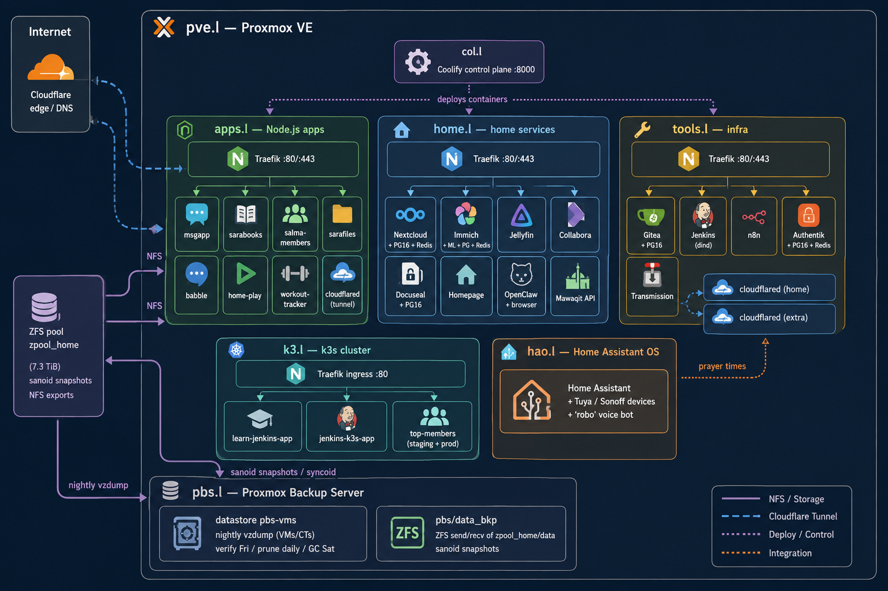

A documented, sanitized self-hosted setup: Proxmox VE + ZFS, Docker deployed via Coolify, per-host Traefik reverse proxies, Cloudflare Tunnels, a k3s Kubernetes cluster, and Home Assistant OS.
All hostnames, IPs and secrets are replaced with placeholders for public sharing. Source of truth: README and docs/architecture.md.

Proxmox VE host — ZFS pool, NFS shares, sanoid snapshots
Coolify control plane (deploys every container)
Node.js / personal project apps + 1 tunnel
Home services (Nextcloud, Immich, Jellyfin, …)
Infra tools (Gitea, Jenkins, n8n, Authentik, …)
k3s Kubernetes cluster — kubectl workloads, separate from Coolify
Proxmox Backup Server — datastore pbs-vms + ZFS replication target
Home Assistant OS (Supervisor-managed, not containerized)
| Service | Host | Purpose | Stack | Domain |
|---|---|---|---|---|
| msgapp | apps.l | Messaging | Node.js + Postgres 15 | msg.example.com |
| sarabooks | apps.l | Book catalog | Node.js + Postgres 15 | books.example.com |
| salma-members | apps.l | Membership portal | Node.js + Postgres 15 | members.example.com |
| sarafiles | apps.l | File upload / sharing | Node.js + Postgres 15 + Cloudinary | files.example.com |
| babble | apps.l | Chat / communication | Node.js | babble.example.com |
| home-play | apps.l | Play dashboard | Static / Nginx | play.example.com |
| workout-tracker | apps.l | Fitness tracker | Node.js | tracker.example.com |
| Immich | home.l | Photo management | Node.js + ML + Postgres + Redis | immich.example.home |
| Nextcloud | home.l | File sync | Nextcloud + Postgres 16 + Redis | nextcloud.example.home |
| Jellyfin | home.l | Media server | Jellyfin (linuxserver) | j.example.home |
| Collabora | home.l | Online office | Collabora CODE | co.example.home |
| Docuseal | home.l | Document signing | Docuseal + Postgres 16 | docseal.example.home |
| Homepage | home.l | Service dashboard | gethomepage | h.example.home |
| OpenClaw | home.l | Personal AI agent | OpenClaw + browser sandbox | claw.example.home |
| Mawaqit | home.l | Prayer-times API | FastAPI (uvicorn) | mawaqit.example.home |
| Gitea | tools.l | Git hosting | Gitea + Postgres 16 | git.example.home |
| Jenkins | tools.l | CI (docker-in-docker) | Jenkins + kubectl | j.example.home |
| n8n | tools.l | Workflow automation | n8n (SQLite) | n8n.example.home |
| Authentik | tools.l | SSO / identity | Authentik + Postgres 16 + Redis | auth.example.com |
| Transmission | tools.l | Download client | Transmission (linuxserver) | tr.example.home |
| learn-jenkins-app | k3.l | Jenkins→k3s deploy experiment | Node.js (GHCR), 2 namespaces | learn.k3.example.home |
| jenkins-k3s-app | k3.l | Jenkins→k3s pipeline app | Node.js (GHCR) | NodePort |
| top-members | k3.l | Membership app (staging + prod) | Node.js + Postgres 15 + nginx | top-members.k3.example.home |
coolify.* labels and an external per-service network.*.example.home hosts.
kubectl apply manifests;
only Traefik comes from k3s' bundled Helm controller (plain-HTTP ingress, no cert-manager).zpool_home/data to
pbs.l, plus nightly vzdump of every VM/CT into the PBS pbs-vms datastore
(verify weekly, prune daily, GC weekly).
${VAR} from .env; the repo
ships only .env.example./data/coolify/ (root-owned); from a non-root account you
reconstruct them from docker inspect (labels + env + mounts).curl -u user:pass) — always
scrub them before sharing.ha CLI, not docker; never commit its config files (they carry
tokens, coordinates, device IDs).kubeconfig, Secret resources, or private images — note their
existence in prose, redact status/metadata, and scrub seed-data configmaps that embed real accounts
and bcrypt hashes.authkey.key,
proxy.key, and notification configs (a Telegram webhook embeds the live bot token + chat id) out of
the repo.
configs/ pve/ # ZFS / storage / backup notes + sanoid.conf col/ # Coolify control plane + its Traefik apps/ # Node.js apps + cloudflared (apps.l) home/ # home services + Traefik + internal-CA config (home.l) tools/ # Gitea, Jenkins, n8n, Authentik, Transmission, tunnels (tools.l) k3l/ # k3s cluster manifests + notes (k3.l) pbs/ # Proxmox Backup Server: jobs/schedules + notes (pbs.l) haos/ # Home Assistant OS capabilities (prose only)
Every configs/<host>/<service>/ folder contains a sanitized
docker-compose.yml and an .env.example with placeholder keys —
copy the example to .env, fill in real values, keep it out of git.